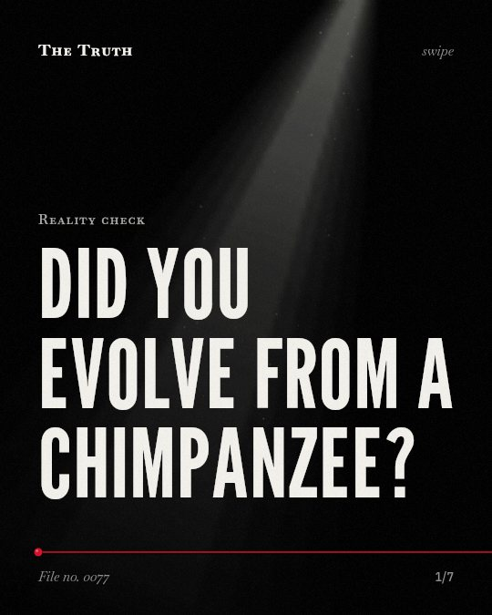

Reality check
Did you evolve from a chimpanzee?

Humans and chimpanzees share a common ancestor.
Evidence from multiple studies shows that humans did not evolve from chimpanzees. Instead, both species branched off from a shared ancestor.
Supported. At least one solid peer-reviewed study. The evidence backs this.
What the research found
Humans diverged from chimpanzees 4.6 my ago and that the human and chimpanzee clade diverged from the gorilla 7.2 my ago.
“The ML analysis of two species shows that humans diverged from chimpanzees 4. 6 my ago and that the human and chimpanzee clade diverged from the gorilla 7. 2 my ago.”
Study, 1995. Takahata et al., Theoretical Population Biology.
The human-chimpanzee split is dated to at least 7-8 million years.
“We date the human-chimpanzee split to at least 7-8 million years and the population split between Neanderthals and modern humans to 400,000-800,000 y ago.”
Study, 2012. Langergraber et al., Proceedings of the National Academy of Sciences.
The common ancestor of living Pan apes likely used plant tools for probing, sponging, and display, but it did not use stone tools.
“This method indicates that the common ancestor of living Pan apes likely used plant tools for probing, sponging, and display, but it did not use stone tools.”
Study, 2014. Haslam, American Journal of Primatology.
The most parsimonious model for the evolution of hominin shoulder shape starts with an African ape-like ancestral state.
“We show that the most parsimonious model for the evolution of hominin shoulder shape starts with an African ape-like ancestral state.”
Study, 2015. Young et al., Proceedings of the National Academy of Sciences.
Derivation of habitual terrestrial bipedality from arboreal hand-assisted bipedality requires fewer transitions, and is also kinematically and kinetically more parsimonious.
“Derivation of habitual terrestrial bipedality from arboreal hand-assisted bipedality requires fewer transitions, and is also kinematically and kinetically more parsimonious.”
Study, 2008. Crompton et al., Journal of Anatomy.
The split happened millions of years ago.
Different models provide different dates for this divergence. Some studies date the split to 4.
Your lineage is a shared history.
That may be why you see similarities in behavior. You are not a descendant of the modern chimpanzee, but a cousin who shared a beginning.
This part is our reading of the evidence, not a finding.
A hand grasping a tool.
You hold a glass of water. Your ancestors used plants to probe and sponge, long before stone tools appeared in the record.
The honest summary
The sources provide multiple independent methods and models that consistently point to a common ancestor for humans and chimpanzees, though they differ on the specific timing of the divergence.
The specific date of the human-chimpanzee split varies significantly between different models, ranging from 4.6 million years to at least 7-8 million years.
What part of your ancestry do you still carry?
Sources
- Kevin E. Langergraber, Kay Prüfer, Carolyn Rowney et al. (2012). Generation times in wild chimpanzees and gorillas suggest earlier divergence times in great ape and human evolution. Proceedings of the National Academy of Sciences. Study, cited 636 times.
- Nathan M. Young, Terence Dante Capellini, Neil T. Roach et al. (2015). Fossil hominin shoulders support an African ape-like last common ancestor of humans and chimpanzees. Proceedings of the National Academy of Sciences. Study, cited 74 times.
- Michael Haslam (2014). On the tool use behavior of the bonobo‐chimpanzee last common ancestor, and the origins of hominine stone tool use. American Journal of Primatology. Study, cited 74 times.
- Naoyuki Takahata, Yoko Satta, Jörg M. Klein (1995). Divergence Time and Population Size in the Lineage Leading to Modern Humans. Theoretical Population Biology. Study, cited 288 times.
- Robin H. Crompton, E. E. Vereecke, Susannah K. S. Thorpe (2008). Locomotion and posture from the common hominoid ancestor to fully modern hominins, with special reference to the last common panin/hominin ancestor. Journal of Anatomy. Study, cited 214 times.
Also read for this file, not quoted
This file was researched and drafted by software, then checked by rules a model cannot talk its way around: each quote above was matched word for word against the paper, and every number had to appear in it. How files are made.